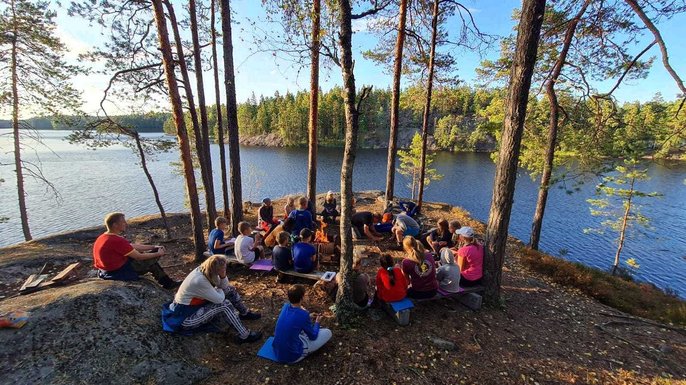

Liikutaan luonnossa
Liikutaan luonnossa kävellen, hiihtäen, kiiveten ja suunnistaen.

Partiolippukunta Espoon Leppäversot
Partio on vastavoima Miks mun pitäis?
ja Ei kuulu mulle!
-asenteille.
Mitä partio on?
Partiossa välitetään ja muutetaan välittäminen käytännön teoiksi. Partiossa toimitaan ryhmissä, jotka noudattavat partio-ohjelmaa.
Ohjelmassa on tärkeää, että saa tehdä itse. Siihen osallistuvat pienimmätkin partiolaiset: vastuun antaminen nuorille on partion perusidea.
Partioon kuuluu seikkailua ja elämyksiä, jotka kasvattavat tervettä luottamusta omiin kykyihin. Ryhmässä oppii toisaalta myös, että kaikkien ei tarvitse osata kaikkea eikä ole olemassa parasta partiolaista.
Meidän lippukunta
Meillä opitaan käden ja mielen taitoja.
Liikutaan luonnossa kävellen, hiihtäen, kiiveten ja suunnistaen.
Osataan ensiapua ja osallistutaan pelastuspalvelutyöhön.
Tunnetaan maamerkit ja yövytään tulilla. Tutustutaan lähiympäristöön ja partiolaisiin kaukaisista maista.
Retkillä laitetaan yhdessä ruokaa retkikeittimillä tai nuotiolla, leikitään ja harjoitellaan erätaitoja.
Vastuun antaminen nuorille on partion perusidea.
Tule mukaan
Etsitkö uutta harrastusta, uusia kokemuksia, uusia kavereita? Oletko aina halunnut kokea, mitä se partio on käytännössä?
Meitä on moneen lähtöön, sillä joka viides suomalainen on tai on joskus ollut partiossa. Nyt on paras aika liittyä partioon. Partiotoiminta alkaa elo–syyskuun vaihteessa. Mikäli kiinnostuit, kannattaa aloittaa soittamalla jäsenasioista vastaavalle, niin kuulet, onko ryhmissä tilaa.